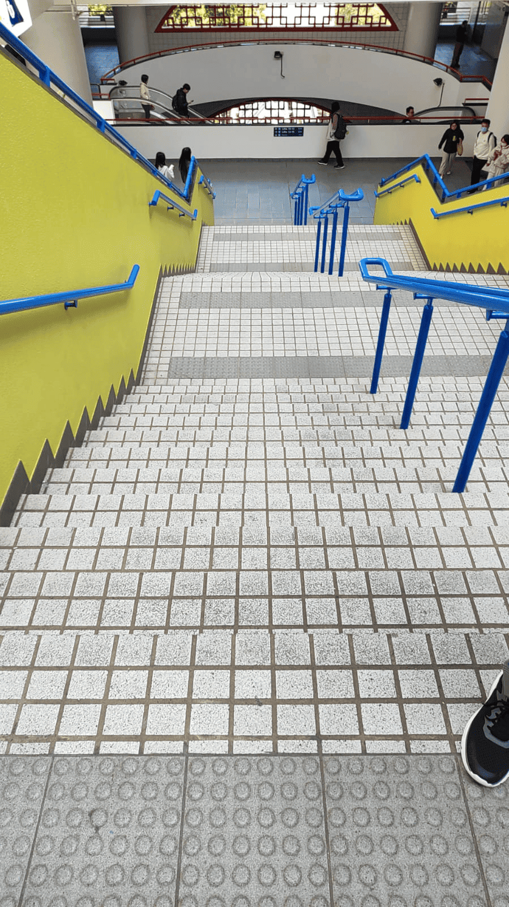

Our Needfinding Process
One of the Interview
Interview is an essential step for our group to fully understand the needs from different kinds of people. In the interviews, we have interview people from different background, including countries or regions from Hong Kong, Mainland China, Turkey, Brazil and Iran, and different position, like undergraduate, phd student and teacher. The questions we have asked them are following:
- Where are you from?
- During your time on campus, did you encounter any problems or challenges that you consider unfriendly?
- What is your favourite animal?
- Assuming the animal is a student, like the second question, what problems or challenges you think it will encounter?
The interviews allow us to analyse POV in details in later section.
Field Visit
The food selling machine in the canteen at HKUST classifies food according to its cultural traits, which affords all students, including those from the animal kingdom, great diversity of choice. However, there is no option for users to exclude food that may be harmful due to allergies, which can be risky for some animal students.
Moreover, the design of the campus stair steps presents a problem for other species; smaller animals such as rabbits may find the steps too big while larger animals, like elephants, may find the steps too small. Improving these aspects would improve inclusivity and accessibility for all students on campus.
My Role in this process
We take turns to interview different pedestrians. In this process, I have interviewed 3 people and record the interview video while my groupmate is interview others for 3 times. In addition, I oftenly inspire interviewee when they did not know what to say. For instance, I give a hint to a interviewee on what trait a dog has as she doesn't know what challenges will a dog encounter.
Besides interviewing, I went to various locations to do field visit and observe the problems occuring on campus. During the visit, I have tried to analyse problem by thinking from another animal's point of view, which allows more ideas in Ideation Process.